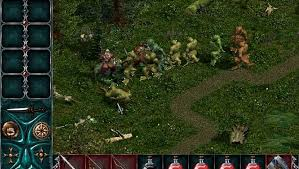

Князь Легенды Лесной страны
Предыстория
Тысячи лет назад, во времена господства Титанов, Северный клан обладал множеством магических предметов, известных как Поющие Вещи. Самой грозной из них считался браслет «Владыка», способный даровать власть над миром. Для защиты артефактов демиурги создали особую расу преданных воинов, наделенных бессмертием.
На закате своей эпохи Титаны надежно спрятали браслет «Владыка», надеясь, что в будущем он поможет возродить Северный клан. Охрану опасного артефакта они поручили одному из своих драконов, которого мог контролировать лишь специальный амулет.
Хранителем Амулета Дракона, в свою очередь, был назначен Ар. Тысячи лет он исполнял свою миссию, пока извечные враги Северного клана, Желтые Собаки, не обнаружили его отряд в небольшой лесной крепости. Захватчики атаковали крепость и уничтожили весь её гарнизон. Незадолго до гибели Ар успел разделить Амулет Дракона на три части и отправить с ястребами старым соратникам — славянину Всеславу, викингу Сигурду и византийцу Михаилу.
Последняя воля хранителя сбылась лишь частично. В Скандинавии Сигурда зарубил Драгомир из Северного клана, а в землях славян ястреба с драгоценной ношей подстрелил Волк из клана Охотников. Лишь Михаил законно получил часть амулета и узнал таким образом о смерти Ара.
Хорошо понимая, какой силой обладает собранный Амулет Дракона, трое героев, каждый со своей частью, выступили в поход. Их пути пересекутся в Лесной стране и лишь один должен выйти победителем.

Сюжет
Один из трех героев, упомянутых в предыстории, начинает свой путь в Лесной стране. Главное сюжетное задание — найти недостающие части Амулета Дракона и объединить их, затем получить с его помощью доступ к браслету «Владыка». Чтобы добиться победы, князю предстоит набраться боевого опыта, собрать дружину, выполнить ряд сюжетных и побочных заданий и подчинить окрестные поселения. Ключевую роль в прохождении играют уникальные артефакты и снаряжение. В конечном итоге протагонист должен разыскать двух героев-оппонентов и бросить им вызов, затем отправиться в логово Дракона и вступить в решающую битву за браслет «Владыка».
С обретением браслета игра заканчивается. Сюжет основного квеста линейный, финал одинаковый для всех. Дальнейшая судьба победителя раскрывается в продолжениях игры — Князь 2: Кровь Титанов и Князь 2: Продолжение легенды. В них события первого «Князя» получили название войны за Амулет Дракона.

Игровой процесс
Игра представляет собой классическую ролевую игру в изометрической проекции. Игроку предстоит путешествовать по локациям, выполнять задания, истреблять монстров. В начале игры на выбор предлагается один из трех героев, затем необходимо указать его класс и распределить характеристики. В зависимости от выбранного персонажа игрок начинает в одном из трех базовых поселений. У каждого из героев есть несколько своих уникальных заданий и диалогов, которые не встречаются у прочих, но, в целом, сюжетная линия для всех одинакова. Драгомир, Михаил и Волк являются непримиримыми противниками. После выбора основного игрового персонажа его соперники не предпринимают активных действий, но с ними придется столкнуться для развития сюжета.

Уровни
Герой получает опыт и поднимает уровень, убивая монстров, выполняя задания, используя зелья и артефакты. Очки можно распределять автоматически с помощью включенной кнопки «авто» в панели персонажа, либо этой же кнопкой вручную, если требуется набрать опыт для какой-либо отдельной характеристики. Максимальный игровой уровень — 13, но характеристики можно повышать и после его достижения.
До 13 уровня характеристики растут с приоритетом в зависимости от класса персонажа. После достижения максимального уровня рост основной характеристики начинает требовать много опыта и замедляется, что дает возможность повысить отстающие параметры.

Дружина
Игру можно пройти как одним персонажем, так и собрав дружину до 9 человек. Размер отряда зависит от параметра харизмы. Автоматических функций для отряда всего две — это приказ атаковать и приказ следовать за князем. Остальное находится под полным контролем игрока. Дружинников можно вооружать, передавать им на хранение предметы, лечить и усиливать зельями, назначать специалистами в деревнях и т. д. Микроменеджмент в бою осложняется отсутствием функции игровой паузы, что было исправлено в продолжениях «Князя».
При необходимости дружинников можно оставлять в деревнях и потом заново брать в отряд. Если ранее дружинник был специалистом, чьим-то учеником или относится к дружественным персонажам, реплики позволят нанять его бесплатно. Остальные попросят денег в зависимости от своего опыта. Чем больше дружина и чем лучше она вооружена, тем легче бои с противником и прохождение игры. Как и князь, дружинники могут погибнуть, но их можно воскресить Живой водой или свитком «Слова Воскрешения». Единственным источником рекрутов являются деревни, они же благодаря казармам и воеводам предоставляют возможность массовой тренировки воинов. В начале игры Драгомиру и Волку дается возможность взять в отряд опытного ветерана, с которым можно побеседовать об особенностях Лесной страны.

История игры
Князь: Легенды Лесной страны (англ. Konung: Legends of the North, изначально известный как Князь: Амулет Дракона) — российская компьютерная ролевая игра, разработанная фирмой 1С и вышедшая на постсоветском пространстве в начале сентября 1999 года. Спустя год игра была издана и за рубежом, там обязанности по её распространению взяла на себя компания Strategy First. В отличие от классического фэнтези, данная игра выполнена в славянском сеттинге.
Из-за особенностей маркетинговой политики в тех странах, где игра была издана, она получила и разное название. Так в Европе, она известна, как Konung: Legends of the North. В США же, напротив, подзаголовок стал основным названием и читается в единственном числе — Legend of the North: Konung. А на территории СНГ и стран Балтии она именуется Князь: Легенды Лесной страны.